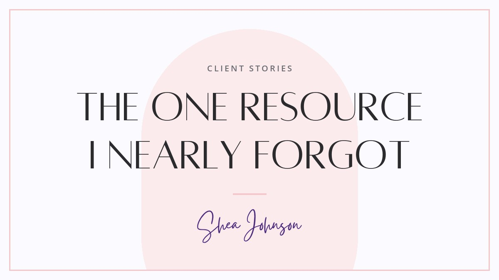

And now finally… here’s the one resource I forgot to mention…
I write to give you all the best I’ve got,
and out of all the resources I’ve said,
how could I forget the one my clients love the most…
ME!
I could sit here all day and write about how obsessed I am with your success…
But I thought to myself… why not let you hear it from one of my clients
Dear Future Rockstar,My name is Angelica, and I met Shea back in 2017 — not as a business coach, but as a fellow classmate in truck driving school. We were both going for our CDLs… and who knew we’d still be good friends to this day. Our friendship is coming up on 10 years, and since then, Shea has introduced me to several streams of income. Just this past August 2024, I had a major breakthrough in my life and career because of an opportunity Shea introduced to me. I can now say that I am doing what I absolutely love to do. I tell her every day that it is because of her that I have actually found something I want to do forever. This is the thing for me. This is it! And I experience this joy every day. I’ve been following her methodologies, implementing her routines, taking her advice — and even when I’m skeptical, she is patient with me, helping me see the bigger, brighter picture ahead. Shea will literally transform your life in ways unimaginable and unthinkable… in a good way :)Signed,Angelica CCEO of Inkspire Notary
Okay, now that you’ve heard it from someone else… you know where to find me.
(But just in case you don’t…)
And if you want to hear from more clients like Angelica,
every now and then a wonderful soul (like you) ✨⭐️
leaves me a review on Trustpilot.
Check out my Trustpilot reviews below: